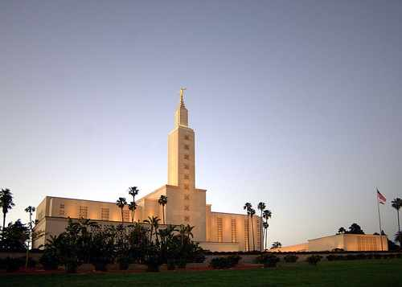

Temple Album
☰
Home
Old
New
Large
Small
Odongkara Ronald
Salt Lake Temple, USA
Washington D.C. Temple, USA

Los Angeles Temple, USA
Johannesburg Temple, South Africa
Accra Temple, Ghana
Manila Temple, Philippines
Tokyo Temple, Japan
Rome Temple, Italy
London Temple, England